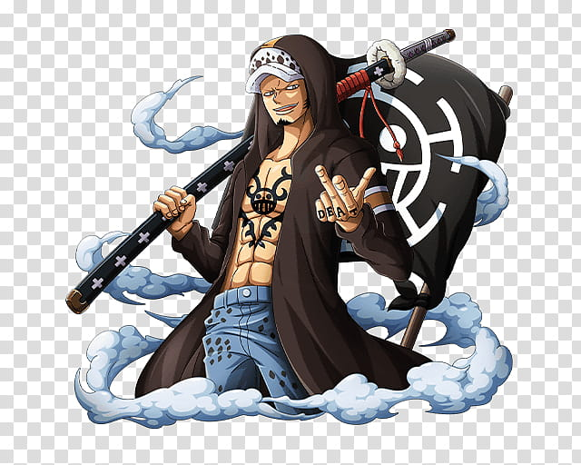

About Law
One of my favourite characters from the One Piece universe: Trafalgar Law, his full name, Trafalgar D. Water Law, is the captain and doctor of the Heart pirates crew. He is also part of a group of eleven pirates known as the eleven Supernovae on the Sabaody Archipel, a group of renowned pirates form the “terrible generation” whose bounty exceeds 100 million berrys. Currently, his bounty is 500 million berrys.
Trafalgar Law characteristics
Besides being intelligent and patient, he is a real strategist. it has different characteristics, having eaten the fruit of the scalpel is one of them. Here are these others:
- He has a long sword called Kikoku
- He is recognizable by his white hat with black polka dots, and has tattoos
- he has the letters of the word DEATH inscribed on each of the fingers of his hands
- His nickname is the Surgeon of Death
Powers
Thanks to his demon's fruit, he has many abilities, here are his techniques:
- Room
- Takt
- Shambles
- counter shock
- gamma knife and many other...
Law’s friends
He has awesome companions in his crew:
